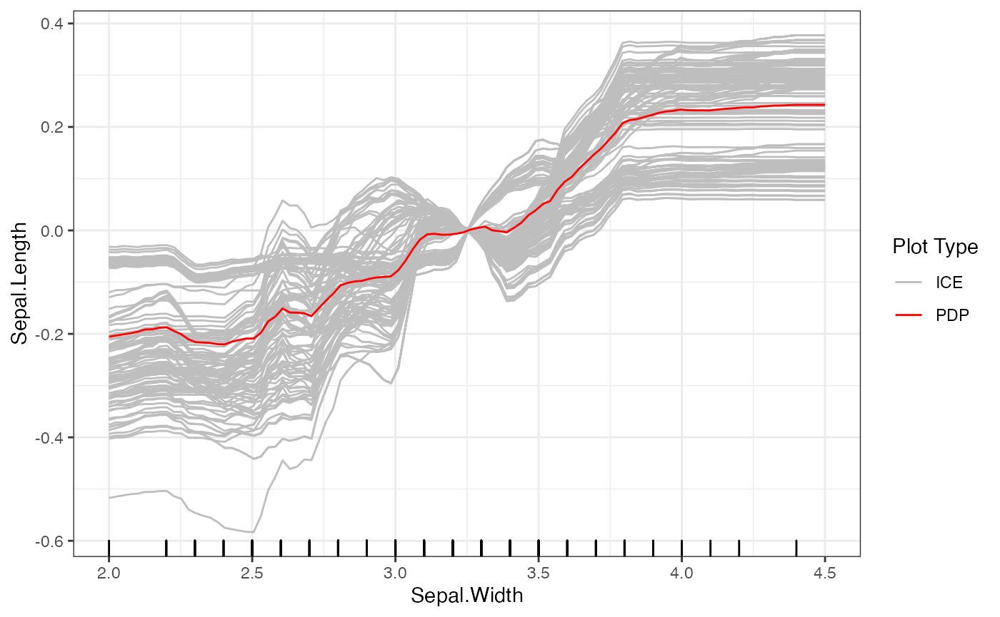
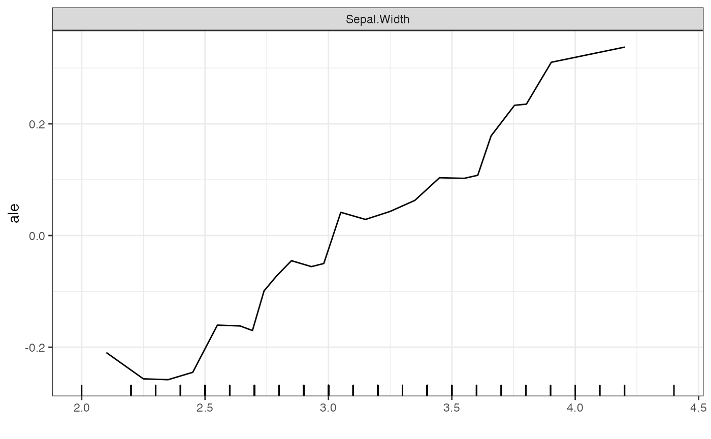
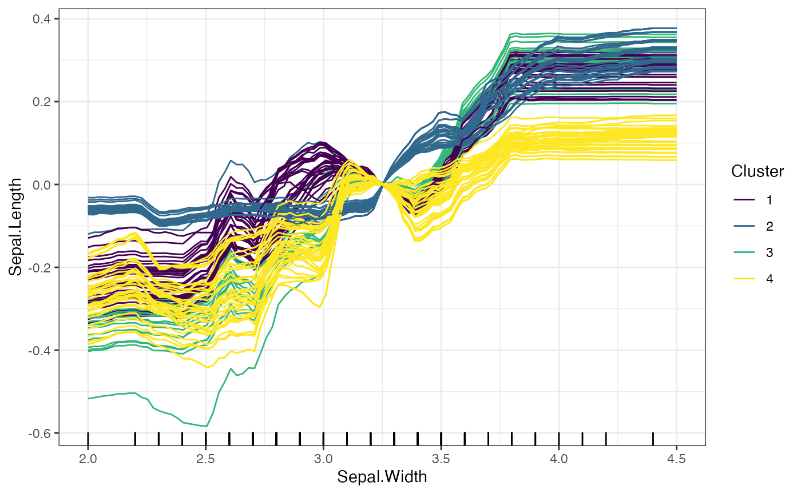
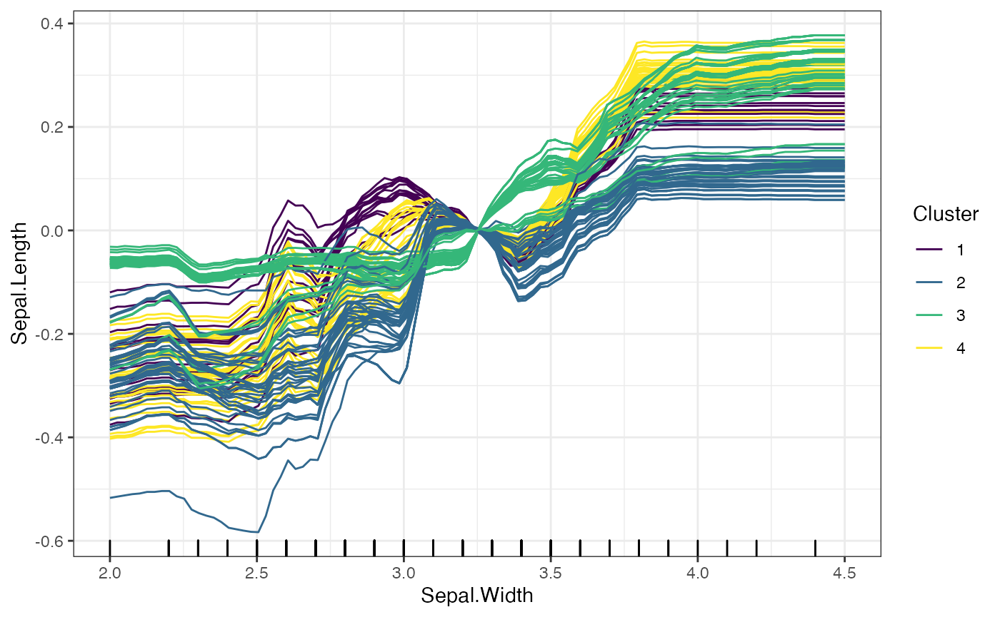

Plotting Methods
In this article, we provide more detail on the different plots for the interpretability methods, including how to set the number of points plotted for a given feature, setting the center of the plots, and additional options not discussed in the general overview.
Interpreter Class Initialization
For the examples in the additional articles, we use the well-known iris dataset, which provides information on 50 flowers from each of 3 species of iris, and a random forest model for predicting the "Sepal.Length" variable. To begin making interpretability plots, we must start with an Interpreter object, which consists of the following parameters:
## ##
## ## Rforestry (Version 0.9.0.98, Build Date: R 4.1.1; x86_64-apple-darwin17.0; 2022-04-11 19:41:15 UTC; unix)
## ## See https://github.com/forestry-labs for additional documentation.
## ## Please cite software as:
## ## Soren R. Kunzel, Theo F. Saarinen, Edward W. Liu, Jasjeet S. Sekhon. 2019.
## ## ''Linear Aggregation in Tree-based Estimators.'' arXiv preprint
## ## arXiv:1906.06463. https://arxiv.org/abs/1906.06463
## ##
# Load in data
data("iris")
set.seed(491)
data <- iris
# Train a random forest on the data set
forest <- forestry(x=data[,-1],
y=data[,1])
# Create a predictor wrapper for the forest
forest_predictor <- Predictor$new(model = forest,
data=data,
y="Sepal.Length",
task = "regression")
# We specify grid.size for clarity (grid.size = 50 by default)
forest_interpreter <- Interpreter$new(forest_predictor,
grid.size = 50)
print(forest_interpreter)## <Interpreter>
## Public:
## ale.grid: list
## center.at: list
## clone: function (deep = FALSE)
## data.points: 67 92 60 69 104 12 24 106 112 18 2 141 64 78 83 10 6 85 ...
## feat.class: numeric numeric numeric factor
## features: Sepal.Width Petal.Length Petal.Width Species
## features.2d: data.frame
## grid.points: list
## grid.size: 50
## initialize: function (predictor = NULL, samples = 1000, data.points = NULL,
## pdp.1d: list
## pdp.2d: list
## predictor: Predictor, R6
## saved: listThe following parameters in the Interpreter object determine different aspects of the interpretability plots:
-
grid.size: This provides the number of grid points we want for continuous features for PDP, ICE, and ALE methods. A larger input forgrid.sizecreates more points that are plotted, which increases the fidelity of the plot and the computation time. This is specified when theInterpreterobject is declared. -
grid.points: This stores lists of grid points for each feature in the data. For continuous features, the grid points are equally spaced values from the minimum value to maximum value of the feature, with the length specified bygrid.size. This parameter determines which points to plot PDP and ICE methods. -
center.at: This stores a list of values to center the continuous features plotted for PDP and ICE curves. The center is defined as the value for a feature that we want to center at, rather than a particular value for the PDP or ICE curve. By default, this is set to the minimum value in thegrid.pointslist for each continuous feature.
Below, we demonstrate examples of these parameters for feature Sepal.Width:
# The values of Sepal.Width to be plotted by PDP and ICE curves
print(forest_interpreter$grid.points$Sepal.Width)## [1] 2.000000 2.048980 2.097959 2.146939 2.195918 2.244898 2.293878 2.342857
## [9] 2.391837 2.440816 2.489796 2.538776 2.587755 2.636735 2.685714 2.734694
## [17] 2.783673 2.832653 2.881633 2.930612 2.979592 3.028571 3.077551 3.126531
## [25] 3.175510 3.224490 3.273469 3.322449 3.371429 3.420408 3.469388 3.518367
## [33] 3.567347 3.616327 3.665306 3.714286 3.763265 3.812245 3.861224 3.910204
## [41] 3.959184 4.008163 4.057143 4.106122 4.155102 4.204082 4.253061 4.302041
## [49] 4.351020 4.400000
# The number of grid.points is equal to the grid.size
print(length(forest_interpreter$grid.points$Sepal.Width))## [1] 50
print(forest_interpreter$grid.size)## [1] 50
# The value of Sepal.Width we center the PDP and ICE curves
print(forest_interpreter$center.at$Sepal.Width)## [1] 2
# plot the PDP and ICE curves
plot(forest_interpreter, features = "Sepal.Width")## $Sepal.Width
After initializing the Interpreter, we can still change the centers and grid points of the plot. For example, we provide some code below to provide a new set of grid points and center at the mean value for Sepal.Width. Note that when we set a new center value, it must be within the range of the grid points.
# Set new grid points
set.grid.points(forest_interpreter, "Sepal.Width",
values = seq(2, 4.5, length.out = 100))
# Set new center
set.center.at(forest_interpreter, "Sepal.Width",
mean(seq(2, 4.5, length.out = 100)))
# New plot
plot(forest_interpreter, features = "Sepal.Width")## $Sepal.Width
In contrast to the fixed grid points for PDP and ICE methods, the ALE method sets its grid points based on quantiles of the marginal distribution. By doing so, it avoids sparsity within any one neighborhood. The ALE is also always mean-centered. As a result, methods such as set.grid.points and set.center.at do not affect the ALE plots. The key parameter for the ALE method is grid.size, which determines the number of points calculated by the ALE.
# ALE plot
plot(forest_interpreter, features = "Sepal.Width", method = "ale")## $Sepal.Width
Additional Features for ICE Methods: Clustering
This package also provides a new feature to cluster the ICE curves. The default option of plot for the Interpreter class plots the ICE curves and their mean, the PDP curve. We introduce the use of the kmeans unsupervised learning algorithm as a way to better visualize groups of ICE curves. To do so, we set method = "ice" in the plot function, and can set the number of clusters and the type of clustering with the clusters and clusterType arguments respectively.
# Clustering Based on the Predicted Values of the ICE Curves
plot(forest_interpreter,
features = "Sepal.Width",
method = "ice",
clusters = 4,
clusterType = "preds")## $Sepal.Width
# Clustering Based on the Change in Predicted Values of the ICE Curves
plot(forest_interpreter,
features = "Sepal.Width",
method = "ice",
clusters = 4,
clusterType = "gradient")## $Sepal.Width
The two options for clusterType differ as follows: * preds: Each predicted value for an ICE curve is treated as an entry in a vector, and the ICE curves as grouped based on these prediccted values. * gradient: Rather than clustering based on the predicted values, the gradient method takes the change in predicted values across consecutive grid points, and clusters based on these changes.
For further details on these methods, please refer to the “References” tab, which contains documentation for each of the methods discussed.